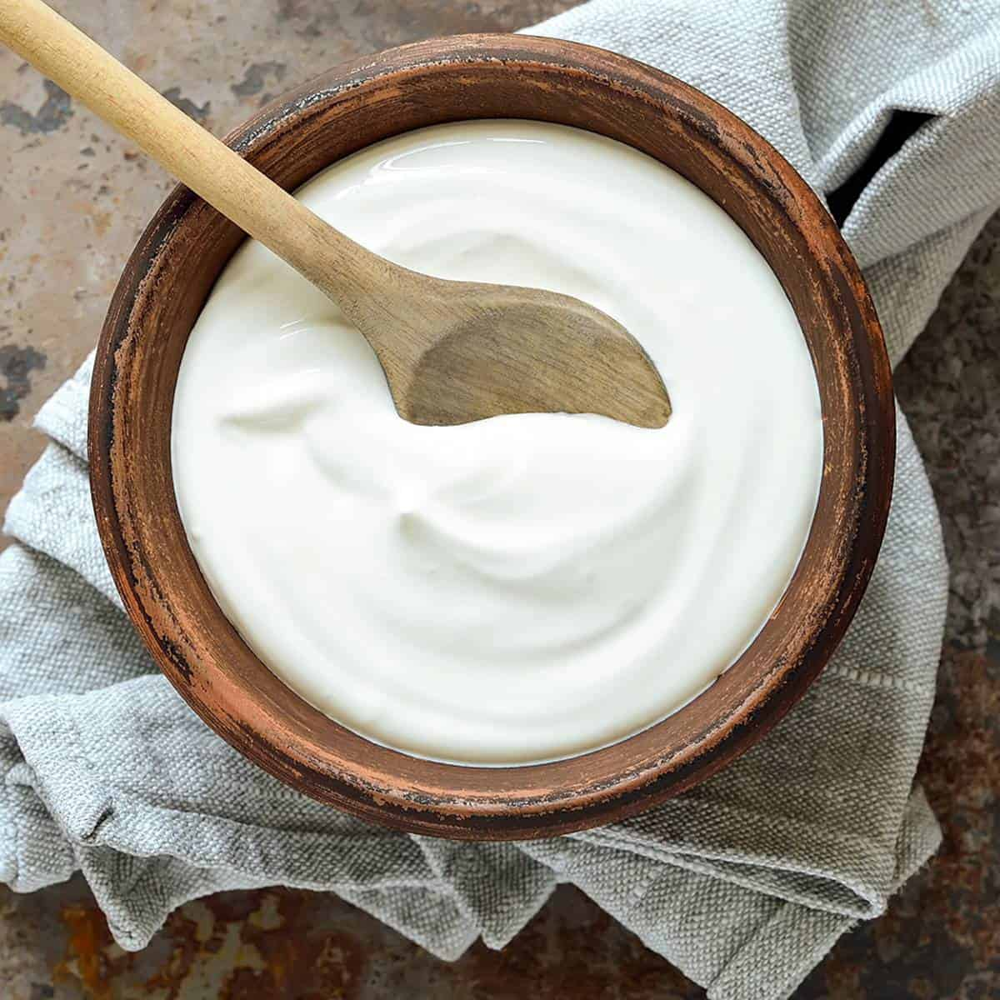

Little Miss Abyss Eats Food
Homemade Yogurt

Description
I totally free-styled this recipe after realizing that a small tub of yogurt was almost $10 at our local grocery store! I suppose the idea of fermenting dairy may turn people off who are not comfortable in the kitchen, but I promise you, making yogurt is SO easy!
Ingredients
- 1 litre of homo milk
- 2 tbsp of store-bought yogurt
Instructions
- Place the milk in a saucepan and heat to a boil while stirring so the milk doesn't burn.
- Once the mill begins to bubble up, remove the saucepan from the heat
- Leave on counter or in an ice bath until temperature reaches 110 - 115 degrees Fahrenheit
- Add the 2 tablespoons of yogurt into a large 1 litre mason jar (or other container)
- Add the milk and stir.
- Find a warm place to incubate the yogurt for 5 to 7 hours.
- Test after 5 hours to check on flavour. I prefer waiting 7 hours as I like my yogurt more tangy.
- Place in the fridge to cool and enjoy!